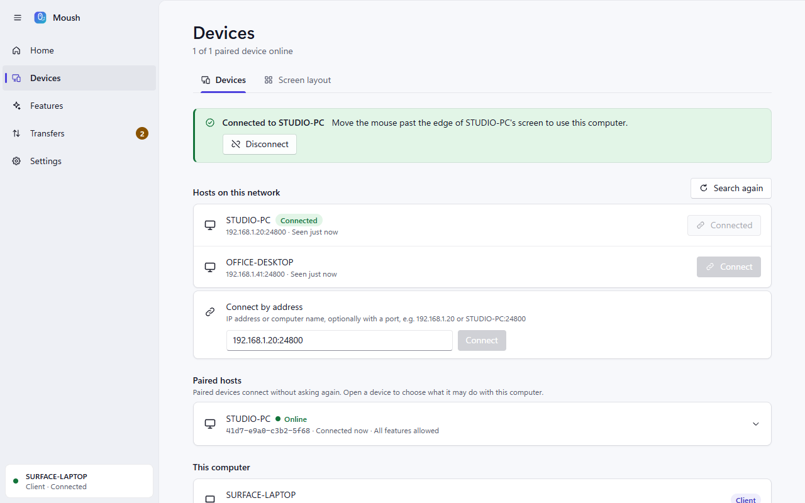
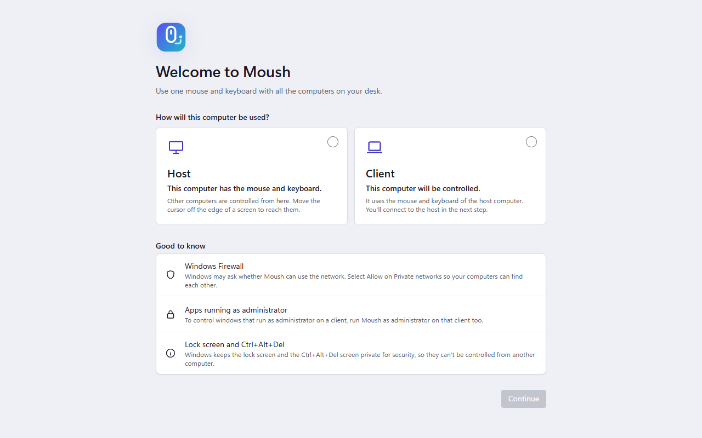
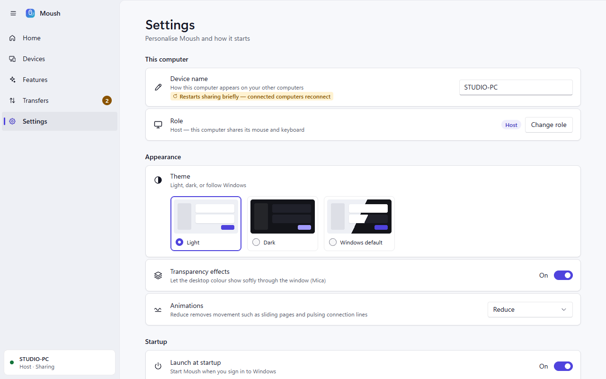

Seamless edge switching
Cross a shared edge and input follows the cursor. Edges shared with your own monitors keep behaving like normal Windows transitions.
Windows 10 & 11 · local network
Move your cursor off the edge of one computer and it keeps going on the next. Moush shares your mouse, keyboard, clipboard and files across Windows PCs on your LAN — encrypted, low latency, and paired with a 6-digit code.

Why Moush
One app acts as both host and client. Pick a role on first launch and change it later. Everything runs over a single encrypted TCP connection with no polling on the input path.
Cross a shared edge and input follows the cursor. Edges shared with your own monitors keep behaving like normal Windows transitions.
Monitor sizes, positions and scaling are detected on both sides. A 150% laptop sits next to 100% monitors at its real-world size.
Alt+Tab and Win shortcuts act on the computer you’re working on — or stay on the host if you prefer. Jump between computers with the keyboard.
Text, rich text and images sync both ways. Password-manager content is skipped, and an in-memory history lets you paste earlier clips.
Drag files onto the window. Streamed, encrypted, integrity-checked and resumable, with approval on the receiving side.
Share a snippet or a URL in one click. Links open in the default browser on the other computer.
Every connection uses Noise XX encryption with mutual authentication. A new device is trusted only after you approve a matching 6-digit code on both computers.
Switch clipboard, files or text sharing off globally or per paired device. A feature works only when both computers allow it.
Event-driven capture and injection. The app is roughly 7 MB and lives in the notification area; transfers never stall the input path.
A look around
Fluent-inspired surfaces with an optional Mica backdrop, light and dark themes, reduced-motion support and high-contrast friendly colours.




Getting started
Install Moush on every computer you want to include. All of them must be on the same network.
Run Moush_x.y.z_x64-setup.exe. It installs for the current user and needs no admin prompt.
On the computer with the mouse and keyboard choose Host. On the others choose Client. When Windows asks, allow Moush on private networks.
On the client, pick the host under Devices. A dialog appears on both screens — check that the 6-digit codes match and click Allow on both.
On the host open Devices → Screen layout. Drag the laptop until an edge touches the monitor it sits next to, then Save. Test jumps the cursor there.
How to use Moush
Everything below applies once your computers are paired and arranged in the layout editor.
Move the cursor through a highlighted edge to hand over input; the keyboard types on the computer the cursor is on. Move back and you are home again. Nothing is switched while a mouse button is held, so drags stay on the computer that started them.
| Shortcut (host keyboard) | Effect |
|---|---|
| Ctrl + Alt + Esc | Bring the cursor back to the host immediately |
| Ctrl + Alt + Shift + Arrow | Jump to the neighbouring computer in that direction |
| Ctrl + Alt + Shift + Home | Jump back to the host |
| Scroll Lock | Lock the cursor to the current computer (toggle) |
The tray menu also has Bring cursor back to this computer. Keys and buttons are always released when the cursor leaves, the connection drops or the app exits — no stuck keys.

Copy on one computer and paste on another. Text, rich text and images are synchronised in both directions; content that password managers mark as sensitive is skipped. Features → Clipboard has per-format switches, a size limit and an in-memory history.
Drag files onto the Moush window, or use Transfers → Send files…. The receiving
computer can ask before accepting, and files land in Downloads\Moush by default.
Progress, speed, cancel and retry (which resumes partial files) live on Transfers.
You can also share a text or a link there.
Folders aren’t supported yet — zip them first. Received files are never opened automatically and keep the Windows “downloaded from the internet” mark.
Under Devices, open a paired device to decide whether it may use clipboard sync, file transfer and text sharing with this computer. A feature works only when both sides allow it.

Good to know
These limits come from Windows itself, not from Moush.
Ctrl+Alt+Del, the lock screen and UAC prompts run on the secure desktop. No application can capture or inject input there. When the host locks, the cursor returns automatically.
Win+L always locks the host — Windows handles it before any application sees it.
Windows blocks injected input into administrator windows (UIPI). Run Moush as administrator on the client to control them; the same applies on the host while an elevated window has focus.
Troubleshooting
Logs live in %LOCALAPPDATA%\Moush\logs\mouseshare.log. The Diagnostics page shows the firewall state, latency and the most recent lines.
Both computers must be on the same network. Guest Wi-Fi usually isolates devices, and VPNs can block discovery. Connect by address instead: the host’s IPs are on its Diagnostics page. Also check Settings → Let other computers find this one.
Make sure the other computer is set to Host and sharing is on. Windows Firewall must allow Moush — use Diagnostics → Add firewall rule, or set the network to Private. Third-party firewalls should allow Moush.exe, TCP 24800 and UDP 24801.
In Devices → Screen layout, the laptop rectangle must touch a monitor edge (it highlights blue). Check that Scroll Lock hasn’t locked the cursor, and that the corner dead zone or switch delay isn’t set too high. Switching is disabled while a mouse button is held.
The focused window on the client is probably elevated. Run Moush as administrator on the client. Lock screen, UAC and Ctrl+Alt+Del cannot be controlled remotely by design.
Quit Moush from the tray and delete %APPDATA%\Moush. Devices will need to be paired again.
For developers
Windows 10/11, Rust 1.85+ (MSVC toolchain), Node.js 20+ and the WebView2 runtime.
npm install
npx tauri build # release app + NSIS installer
npx tauri dev # dev build with hot reload
cargo test --workspace # unit + loopback testsThe installer lands in target\release\bundle\nsis.
cargo build --release -p moush-cli
moush-cli monitors
moush-cli discover
moush-cli host [--port N]
moush-cli client <ip|host-id> [--dry-run]
moush-cli bench [--events N]
moush-cli selftest
moush-cli identitymoush-cli.exe runs the same engine without the UI — useful for testing, benchmarking and troubleshooting.
| Settings, identity, paired devices, layout | %APPDATA%\Moush |
|---|---|
| Logs | %LOCALAPPDATA%\Moush\logs\mouseshare.log |
| TCP | 24800 (input connection) |
| UDP | 24801 (discovery broadcasts) |